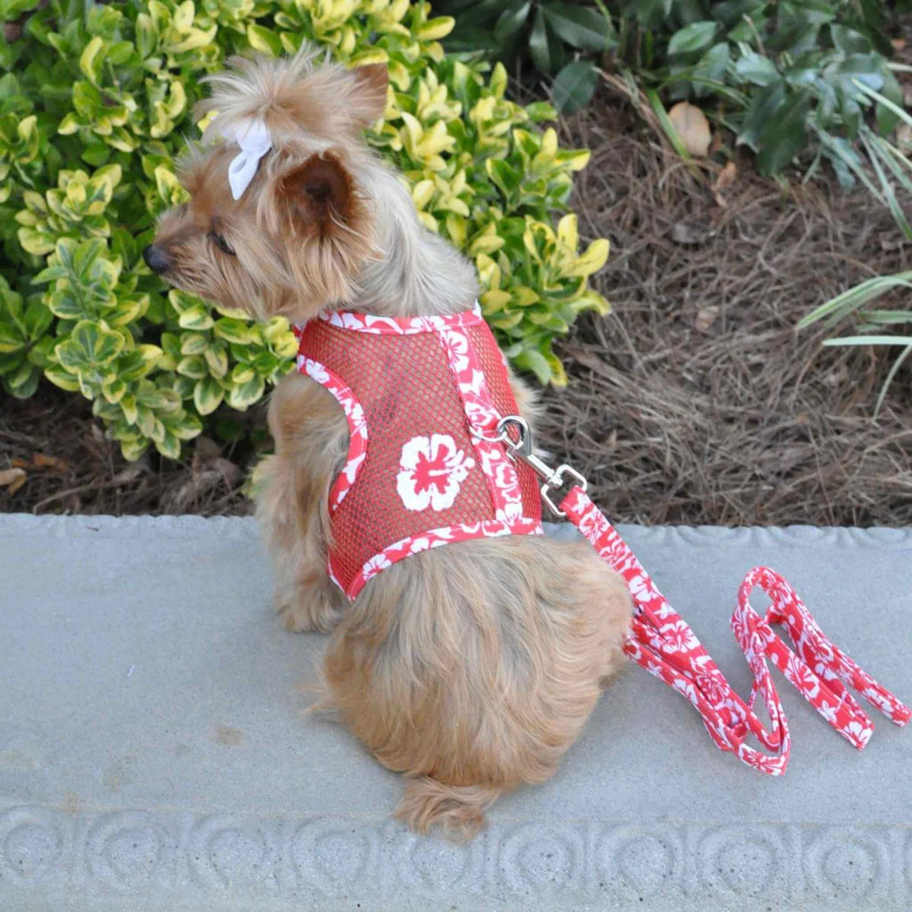
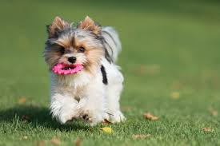
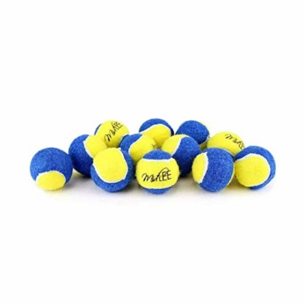
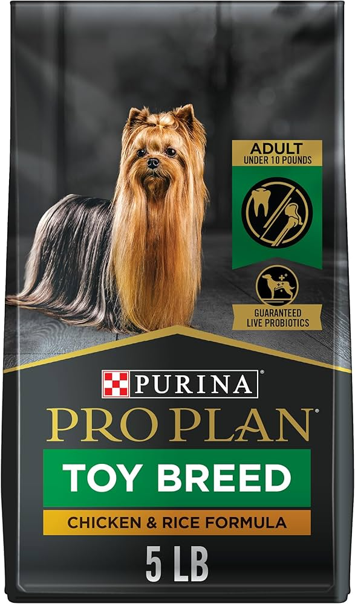
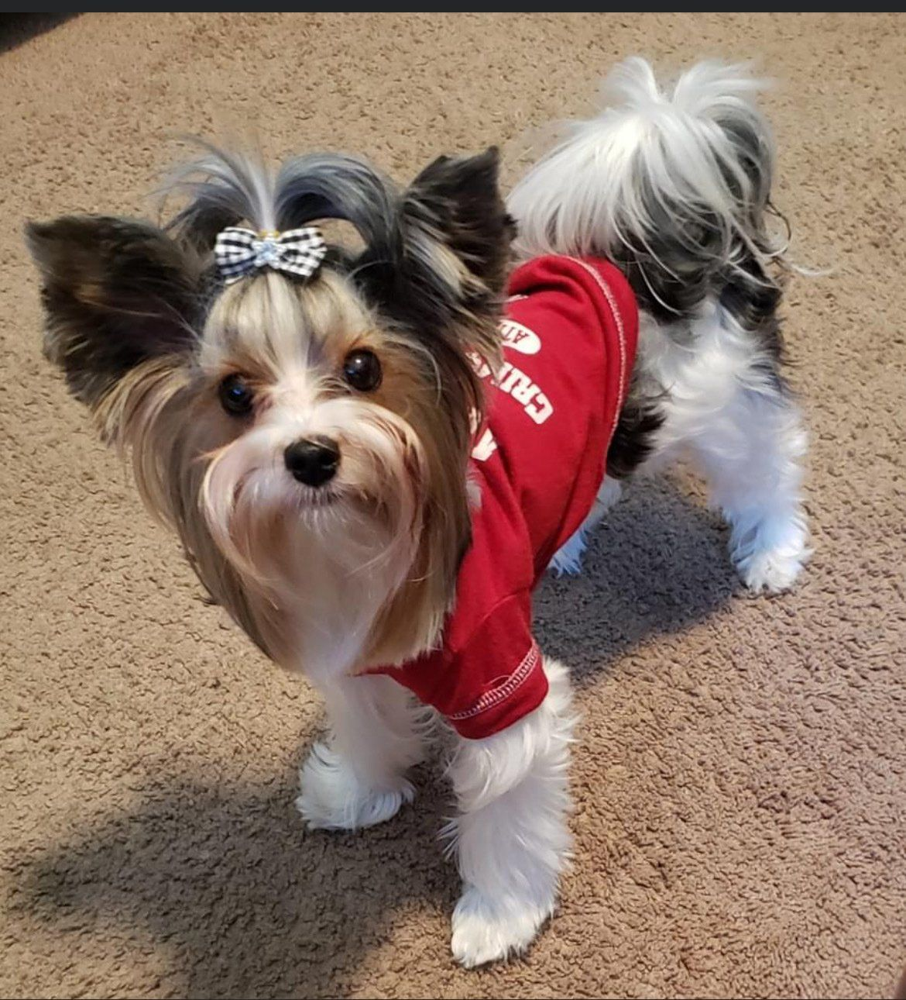
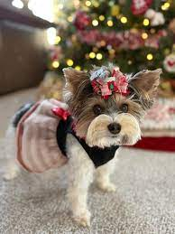

Shopping for Biewer Yorkies
Anything and Everything They Need
Toys and Exercise
 Yorkies should use chew toys because they help maintain their dental health by reducing plaque and tartar buildup, which is crucial for preventing gum disease. Chew toys also provide mental stimulation and relieve boredom, preventing destructive chewing on household items.
Health and Nutrition
A Biewer Yorkie’s nutrition should consist of high-quality, protein-rich food to support their energy levels and coat health. A balanced diet with lean meats, healthy fats, and essential vitamins is crucial, while avoiding fillers and artificial ingredients.
Fasion
Cute Sweaters

Due to Biewer Terriers having thinner fur than most dogs they get cold easily. Sweaters are the perfect thing to keep your pup nice and warm during the colder seasons. You can even find Sweaters for different holidays!
Shirts
Comfy Shirts
Shirts with long sleeves are great for keeping Biewer Terriers warm. Shirts with short sleevs make for cute look. With so many kinds to choose from your sure to find one that matches your pups unique personality!
Dresses
Adorable Dresses
A dress is the perfect thing for your Biewer Yorkie to wear for special occasions or just for a cute photoshoot. You can also add a matching bow to your pups fur for a little added flair!